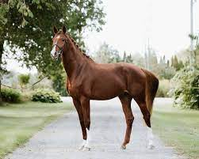

HANOVERIAN
Weight:
1100 - 1,400 pounds.
Height :
63 in.
70 in.
Length:
56 to 68 inches .
Color:
Bay, Black, Chestnut, and Gray.
Longevity:
25 – 30 yrs.
Hanoverian Personality
Hanoverian horses are known for their exceptional athleticism, intelligence, and versatility. They are often described as noble, elegant, and willing, with a strong work ethic and a cooperative nature. Hanoverians excel in various disciplines such as dressage, show jumping, and eventing due to their natural talent for movement, powerful build, and trainable temperament. They are highly sought after for their beauty, performance abilities, and suitability for amateur and professional riders alike.
What to expect
Hanoverian horses are known for their athleticism, versatility, and good temperament. Here’s what you can expect in a nutshell: 1.Athleticism:Hanoverians excel in various equestrian disciplines such as dressage, show jumping, and eventing due to their natural athletic ability, agility, and grace. 2.Versatility:They are versatile horses suitable for riders of different skill levels and disciplines. Whether you’re a beginner or an experienced rider, a Hanoverian can adapt to different riding styles and activities. 3.Temperament:Generally, Hanoverians are known for their good temperament, making them pleasant and trainable horses. They are often easy to handle and work with, which is great for riders looking for a cooperative partner.
History of the Hanoverian
The Hanoverian horse breed has a rich history that dates back to the early 18th century in Germany. Here’s a brief overview: 1.Foundation:The Hanoverian breed was established in 1735 by George II, King of Great Britain and Elector of Hanover, who founded the State Stud at Celle in Lower Saxony, Germany. The goal was to breed horses suitable for cavalry, agriculture, and carriage work. 2.Breeding Goals:Over time, Hanoverian breeders focused on producing versatile horses with good temperament, athleticism, and suitability for both riding and driving. Thoroughbred blood was introduced to enhance speed and refinement. 3.Modern Development:In the 19th and 20th centuries, selective breeding continued to refine the Hanoverian breed. Warmblood horses were also added to improve athleticism and performance in equestrian sports like dressage, show jumping, and eventing.